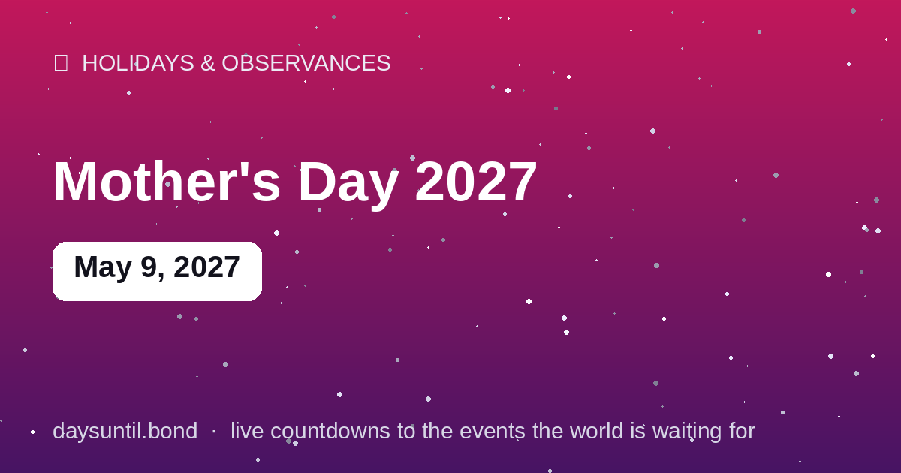

How Many Days Until Mother's Day 2027?
Mother's Day 2027 falls on Sunday, May 9, 2027.
As of November 22, 2026: 168 days to go — 24 weeks and 0 days, 120 weekdays (48 weekend days), about 4,032 hours.

Quick facts
| Date | Sunday, May 9, 2027 |
|---|---|
| Category | Holiday / observance |
About Mother's Day 2027
Mother's Day 2027 falls on Sunday, May 9, 2027. The second Sunday of May in the US and dozens of other countries: the one day a year brunch reservations become a competitive sport. (The UK, Ireland and Nigeria mark Mothering Sunday on a different date.)
The live counter above updates every second and automatically switches to 'days since' once the day arrives.
Why Mother's Day 2027 falls on May 9
In the United States, Mother's Day is observed on the second Sunday in May. May 1, 2027 is a Saturday, so the first Sunday is May 2 and the second is May 9. The rule is a weekday rule, not a fixed date: the calendar date changes every year while the Sunday pattern stays the same.
That distinction matters when planning travel or deliveries. A date-based reminder set to May 9 works for 2027, but a recurring annual reminder should be set to the second Sunday of May rather than to the ninth.
Mother's Day is not on the same date everywhere
The second-Sunday-in-May observance is used in the United States and many other countries, including Canada, Australia and New Zealand. The United Kingdom and Ireland instead observe Mothering Sunday, which falls on the fourth Sunday in Lent. In 2027 that is March 7, more than two months before the US date.
Other countries use dates tied to their own calendars, religious traditions or national histories. If you are arranging an international call, delivery or family trip, check the local observance rather than assuming that the US date applies worldwide.
A short history of the modern US observance
The modern American campaign is closely associated with Anna Jarvis, who organised a memorial service for her mother in West Virginia in 1908 and campaigned for a national observance. President Woodrow Wilson issued a proclamation in 1914 designating the second Sunday in May as Mother's Day.
Jarvis later objected to the commercialisation of the day. That history is a useful reminder that the holiday's original emphasis was remembrance and personal appreciation, not a particular gift or level of spending.
A practical planning timeline for May 9
For a meal or family gathering, make reservations early if you need a specific time; popular brunch slots are often the first to fill. For flowers or mailed gifts, check the seller's delivery cut-off and the destination postcode rather than relying on the holiday date alone.
If family members live in different time zones, agree on a call time in one named zone and convert it for each person. The countdown on this page is date-based and uses your device's local calendar; it does not imply that every country celebrates on the same Sunday.
Mother's Day dates through 2030
| Year | US Mother's Day | Rule |
|---|---|---|
| 2026 | May 10 | Second Sunday in May |
| 2027 | May 9 | Second Sunday in May |
| 2028 | May 14 | Second Sunday in May |
| 2029 | May 13 | Second Sunday in May |
| 2030 | May 12 | Second Sunday in May |
How this countdown is calculated
This page counts calendar days from the current local date to Sunday, May 9, 2027. The date itself is fixed in the event record for this year's observance; the live timer updates in your browser and changes to an elapsed-time display after the day has passed.
The countdown is not a booking service and does not estimate delivery times. Confirm restaurant availability, shipping cut-offs and local observance dates directly with the provider or organiser.
Your Mother's Day 2027 countdown milestones
It is easier to plan against fixed points than against a number that moves. These are the dates on which the countdown to Mother's Day 2027 passes each marker between now and the day itself — the last one falls on Saturday 08 May, when there will be 1 day left.
| Milestone | Day | Date | Remaining |
|---|---|---|---|
| 100 days | Friday | 29 January 2027 | 100 days to go |
| 50 days | Saturday | 20 March 2027 | 50 days to go |
| 30 days | Friday | 09 April 2027 | 30 days to go |
| 14 days | Sunday | 25 April 2027 | 14 days to go |
| 7 days | Sunday | 02 May 2027 | 7 days to go |
| 3 days | Thursday | 06 May 2027 | 3 days to go |
| 1 days | Saturday | 08 May 2027 | 1 day to go |
How the remaining time breaks down
168 days is the headline, but it is rarely the number that helps. 120 of those are weekdays and 48 fall on a weekend, which is the split that matters if you are planning around work. It is 24 weeks and 0 days, or roughly 5.5 months, or about 4,032 hours.
| Unit | Until Mother's Day 2027 |
|---|---|
| Days | 168 |
| Weeks | 24 weeks and 0 days |
| Months (approx) | 5.5 |
| Weekdays | 120 |
| Weekend days | 48 |
| Hours | 4,032 |
| Sleeps | 168 |
Working days are Monday to Friday and do not subtract public holidays, which vary by country and employer — the full month-by-month split is on our weekday page for Mother's Day 2027.